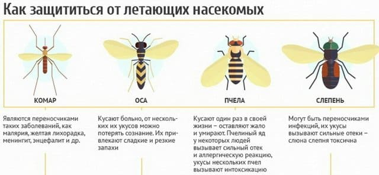
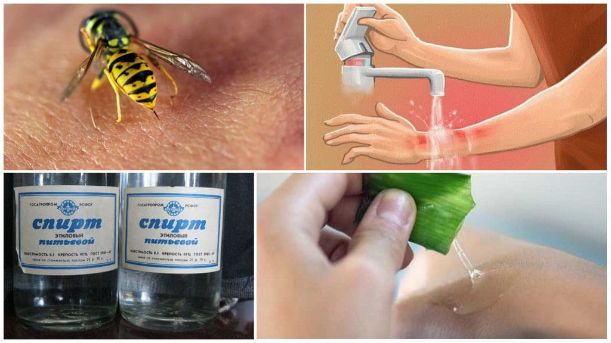
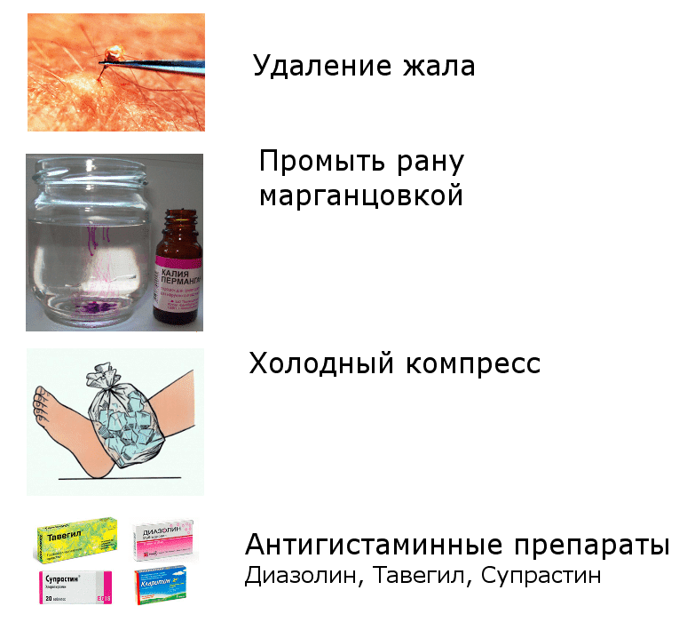
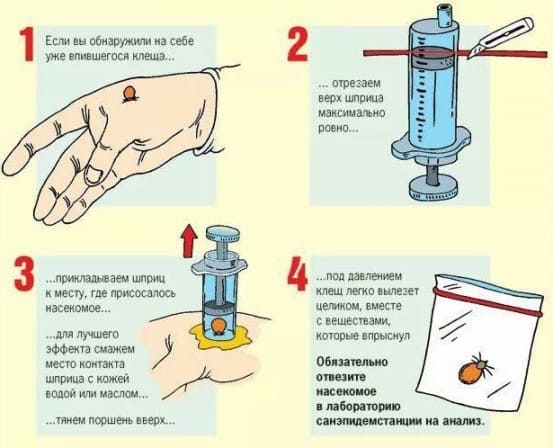
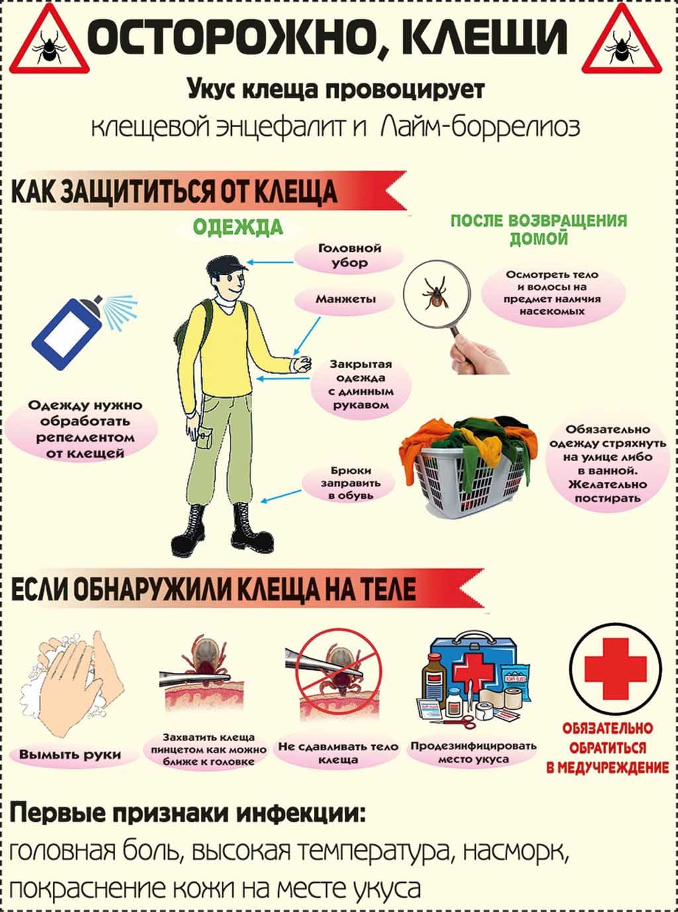

Насекомые, оставляющие в коже ребенка свои жала, вызывают две проблемы: воспаление в месте укуса или аллергическую реакцию на яд.

Пчела оставляет в месте укуса свое жало и прикрепленный к нему мешочек с ядом. Отскребите выступающий наружу мешочек с ядом острым ножом или краем кредитной карточки, прежде чем удалять остаток жала. (Если вы приметесь сразу удалять жало и неизбежно сожмете мешочек пинцетом, то впрыснете в кожу еще больше яда.) Удалив пинцетом жало, приложите к месту укуса лед, чтобы замедлить распространение яда и уменьшить боль. Осы и шершни не оставляют свои жала в коже.

Признаками аллергической реакции являются опухшие руки и веки, хрипы и напоминающая крапивницу сыпь. Если у вашего ребенка имеется локализованный отек вокруг места укуса, приложите лед, дайте дозу антигистаминного препарата для снятия зуда и подождите немного, прежде чем вызывать врача.

Если появится вызывающая опасения аллергическая реакция, то случится это в течение одного часа после укуса. Если появились перечисленные выше симптомы системной аллергии, дайте ребенку дозу антигистаминного препарата и сразу же доставьте его в кабинет своего врача или в приемный покой. Самые опасные проявления аллергии, появляющиеся после укуса, – это хрипы и затрудненное дыхание.
Повторный укус может вызвать у ребенка еще более сильную аллергическую реакцию, чем первый. Если у вашего ребенка были какие-либо из указанных выше симптомов после того, как его впервые ужалила пчела, примите меры предосторожности. Как только вашего ребенка ужалили, дайте ему антигистаминного препарата, приложите пакет со льдом и немедленно отправляйтесь в отделение скорой помощи, где вы посидите некоторое время в приемной. Если в течение двух часов не появится признаков аллергии, можно будет смело вернуться домой.
Если у вашего ребенка уже неоднократно была сильная аллергия на укусы насекомых, обсудите с врачом возможность уменьшения чувствительности к укусам насекомых, которая заключается в ряде инъекций. Если у вашего ребенка уже отмечалась сильная реакция на укусы, всегда держите при себе адреналин в ампулах. Врач может выписать вам рецепт.
Поскольку клещи являются переносчиками болезней, в частности спирохеты, вызывающей артрит Лайма, их требуется осторожно и полностью извлекать. Вот как удалить клеща:
• Обработайте окружающую кожу смоченным в спирте ватным тампоном.
• Пинцетом с тупыми кончиками захватите клеща как можно ближе к его челюстям и как можно ближе к коже ребенка. Медленно вытягивайте клеща вверх, наружу, но не нужно сдавливать его или поворачивать.
• Не пытайтесь вытащить клеща пальцами, поскольку голова может отломиться от туловища и остаться в коже.

Профилактика заболеваний, переносимых клещами
Клещи могут быть переносчиками микробов, вызывающих болезнь Лайма или американский клещевой риккетсиоз. Если вы обнаружили клеща на своем теле или на теле своего ребенка, осторожно удалите его. Профилактический прием антибиотиков не обязателен, но мы рекомендуем обратиться к врачу для осмотра. Риск заболевания очень мал (всего 3 % даже в самых опасных районах), и заболевания, переносимые клещами, легко поддаются своевременному лечению.
При наличии любого из этих симптомов обратитесь к врачу:
• высокая температура через две недели с момента укуса;
• сыпь, либо в месте укуса, либо на других участках тела через пять дней с момента укуса;
• слабость или боль в мышцах и суставах;
• мышечная слабость в определенном месте над шеей, искривленная улыбка, непослушный язык, слабость при открытии или закрытии одного глаза;
• двоение в глазах.
• Не используйте для извлечения клеща жар от зажженной спички или сигареты, поскольку высокая температура может заставить клеща уйти еще глубже в кожу.
• Если клещ находится под кожей: 1) большим и указательным пальцами защипните кожу, в которой находится голова клеща, после чего 2) скальпелем или стерильным одинарным лезвием бритвы тщательно соскребите кожу вместе с головой и челюстями клеща или воспользуйтесь стерильной иглой, чтобы порвать кожу и достать голову с челюстями. Если клещи вызывают у вас брезгливость, попросите своего врача извлечь клеща.

• Тщательно обработайте место укуса антисептиком.
Марта, Уильям, Роберт, Джеймс Сирс"Ваш малыш от рождения до двух лет"